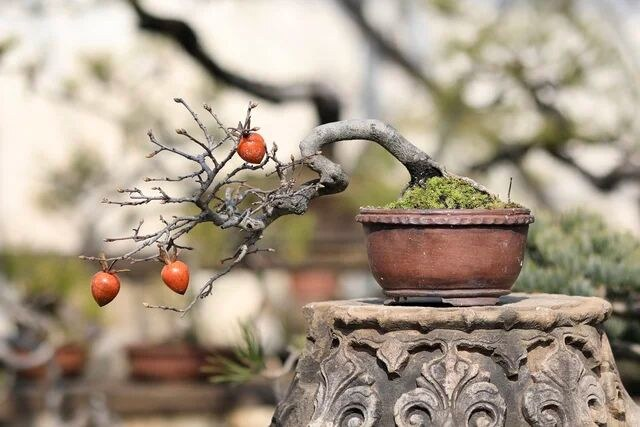
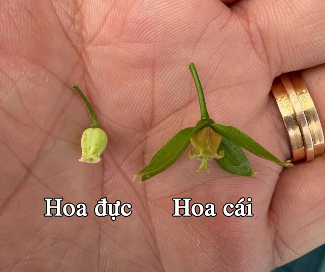
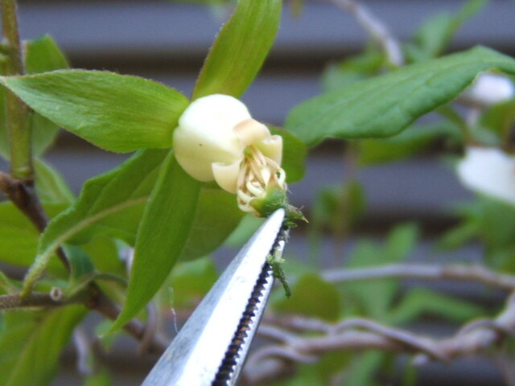
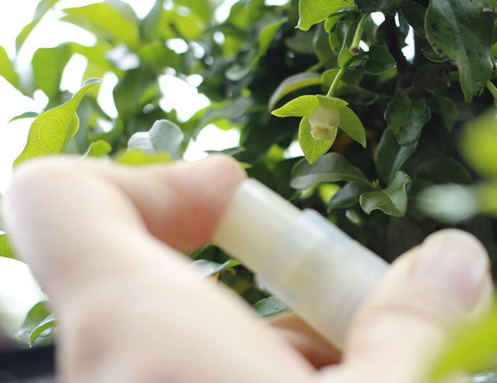
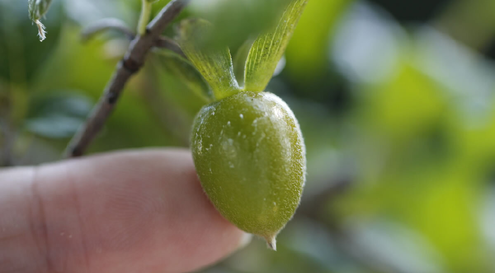
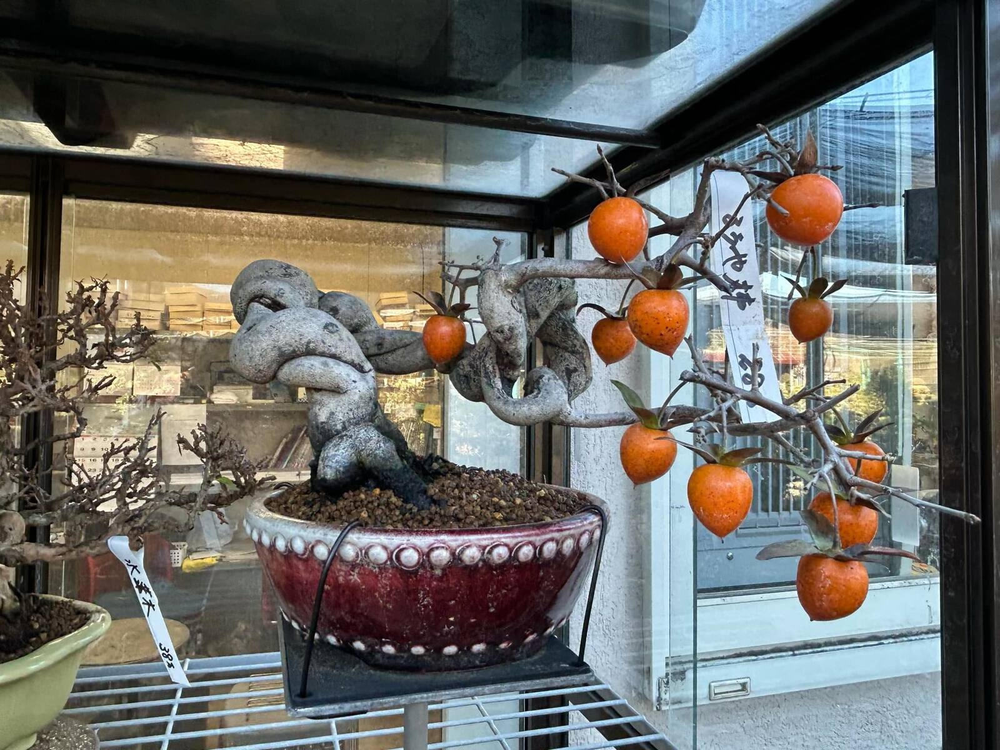
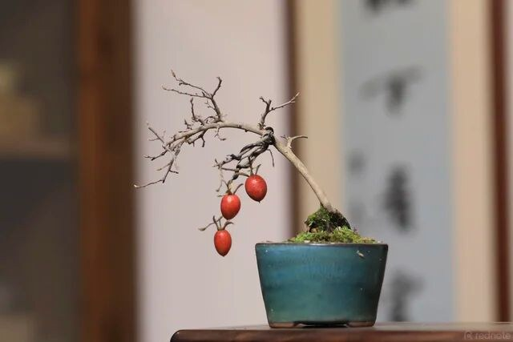

Kinh nghiệm xử lý thụ phấn và đậu quả cho hồng Rōyagaki – 老鸦柿
Thời gian gần đây tôi tìm hiểu khá sâu về Rōyagaki (ローヤ柿 – 老鸦柿/老爺柿), ở Trung Quốc thường gọi là LaoYa, một dòng hồng quả nhỏ rất được ưa chuộng để làm bonsai. Tôi đã đọc và đối chiếu khá nhiều tài liệu, kinh nghiệm của những người trồng lâu năm, đặc biệt chú ý đến cách người ta xử lý cây cái để có quả trong trường hợp có cây đực và không có cây đực.
Tôi viết lại những gì mình tìm hiểu được theo hướng thực hành để những người đang chơi Rōyagaki ở Việt Nam dễ áp dụng hơn. Có một điều tôi muốn làm rõ ngay từ đầu:

Đặc tính đực – cái của Rōyagaki
Rōyagaki là loại cây có cây đực và cây cái riêng biệt.
Cây cái là cây chúng ta cần nếu mục đích là chơi quả. Hoa cái có bầu nhụy rõ ở phía sau hoa; sau khi được thụ tinh hoặc được kích thích phù hợp, bầu này sẽ lớn dần thành quả.
Cây đực có nhiệm vụ cung cấp phấn.
Vì vậy, khi mua một cây còn nhỏ chưa từng ra hoa thì việc nhìn lá, thân hay dáng cây để kết luận chắc chắn đực hay cái là rất khó. Cách đáng tin cậy nhất vẫn là quan sát hoa khi cây đến tuổi sinh sản, hoặc mua cây đã được xác định giới tính từ trước.
Vấn đề thường gặp nhất đối với người chơi bonsai là chúng ta chỉ sở hữu một cây cái. Nhưng ngay cả khi có cả cây đực và cây cái thì vẫn phát sinh một vấn đề khác:
Bởi vậy tôi chia cách xử lý thành ba trường hợp.

Có cây đực — để thụ phấn tự nhiên
Đây là cách tự nhiên nhất. Khi cây đực và cây cái cùng bước vào thời kỳ ra hoa, đặt hai cây gần nhau. Côn trùng và các tác nhân tự nhiên có thể chuyển phấn từ hoa đực sang hoa cái.
Nếu thụ phấn và thụ tinh thành công: hoa cái → thụ phấn → thụ tinh → bầu lớn → quả → hình thành hạt.
Ưu điểm lớn nhất của phương pháp này là quả có khả năng mang hạt hữu thụ, chúng ta có thể thu hạt để gieo cây con. Tuy nhiên với bonsai, đặc biệt khi cây chỉ có vài chục hoa, tôi không thích phụ thuộc hoàn toàn vào côn trùng. Nếu đã có cả cây đực và cây cái, tôi ưu tiên thụ phấn bằng tay.
Có cây đực — chủ động thụ phấn thủ công
Đây là phương pháp tôi cho rằng phù hợp nhất với người chơi Rōyagaki quy mô nhỏ.
Trong mùa hoa, nên quan sát cây mỗi ngày. Không cần chờ toàn bộ cây cái nở đồng loạt. Hoa nào bước vào giai đoạn nở thích hợp thì xử lý hoa đó.
Có thể lấy một hoa đực đã trưởng thành, đang có phấn, để phần mang phấn tiếp xúc nhẹ với bộ phận nhận phấn của hoa cái. Hoặc dùng một cây cọ mềm sạch: lấy phấn hoa đực → đưa phấn sang hoa cái. Không cần chà mạnh. Mục tiêu chỉ là đưa phấn tới đúng vị trí mà không làm tổn thương hoa.
Ví dụ hôm nay có 3 hoa cái mở thì xử lý 3 hoa. Ngày mai thêm 5 hoa mở thì xử lý tiếp 5 hoa đó.
Sau khi làm xong, nếu có điều kiện nên đánh dấu những hoa đã thụ phấn. Sau vài ngày có thể quan sát sự thay đổi của bầu.

Thụ phấn thật cho chúng ta một thứ rất quan trọng: hạt
Nếu mục tiêu ngoài chơi quả còn muốn lấy hạt để gieo thì đây là điểm cần nhớ.
Khi hoa cái nhận phấn đực và xảy ra thụ tinh bình thường, quả có khả năng chứa hạt. Hạt có thể được lấy từ quả chín, rửa sạch phần thịt rồi đem gieo.
Nhưng cây mọc từ hạt là thực sinh, tức một cá thể mới về di truyền. Nó không phải bản sao của cây mẹ. Và quan trọng hơn:
Nếu đang sở hữu một cây cái có đặc tính đẹp và muốn nhân đúng cây đó, tôi ưu tiên nhân giống vô tính như giâm cành, giâm rễ, chiết cành hoặc tách chồi hơn là gieo hạt.
Vấn đề khó nhất: chỉ có cây cái, không có cây đực
Đây cũng là vấn đề tôi dành nhiều thời gian tìm hiểu nhất.
Ban đầu chúng ta rất dễ nghĩ: không có cây đực → không có phấn → không thụ tinh → không có quả. Điều này chỉ đúng nếu chúng ta đang nói về quả hình thành thông qua sinh sản hữu tính bình thường.
Trong thực tế, Rōyagaki cái có thể được kích thích để bầu nhụy phát triển thành quả mà không cần thụ tinh. Phương pháp tôi thấy đáng tin cậy nhất là sử dụng Gibberellin. Ở Nhật thường thấy ghi: ジベレリン.
Gibberellin là chất điều hòa sinh trưởng thực vật. Nhưng cần hiểu thật đúng:
Nó tác động đến sinh lý cây, khiến bầu nhụy có thể tiếp tục phát triển mặc dù không xảy ra thụ tinh. Hiện tượng này gọi là đơn tính kết quả – Parthenocarpy. Có thể hiểu đơn giản:
Hoa cái + không có phấn đực + Gibberellin → bầu phát triển → quả.
Nhưng vì không có quá trình thụ tinh: quả tạo ra theo cách này sẽ không có hạt.
Nồng độ Gibberellin tôi thấy đáng quan tâm nhất: 50–100 ppm
Qua những tài liệu và kinh nghiệm thực tế tôi đã đối chiếu, có nhiều mức nồng độ Gibberellin đã được sử dụng trên hồng Rōyagaki. Có trường hợp dùng khoảng 200 ppm, cũng có những công thức dựa trên tỷ lệ pha loãng của từng chế phẩm.
Tuy nhiên, mức tôi đặc biệt quan tâm để bắt đầu là 50–100 ppm.
Lý do rất đơn giản: mức này đã cho thấy khả năng kích thích Rōyagaki cái đậu quả, quả tiếp tục phát triển đến chín và khi kiểm tra bên trong thì không có hạt, đúng với cơ chế đơn tính kết quả.
Vì vậy nếu có một cây quý và chưa từng xử lý Gibberellin, tôi không thấy lý do gì phải lập tức sử dụng nồng độ cao hơn.
Cách tôi sẽ xử lý Gibberellin khi không có cây đực
Đừng nhìn lịch và quyết định: "Hôm nay phun Gibberellin cho cả cây." Tôi cho rằng đây là cách làm chưa tốt.
Hãy nhìn hoa. Các nụ Rōyagaki không mở cùng một lúc. Trong cùng một cây có thể có hoa đã mở, hoa đang chuẩn bị mở và những nụ còn nhỏ hơn.
Vì vậy nên chuẩn bị dung dịch Gibberellin rồi theo dõi cây mỗi ngày. Khi nhóm hoa cái bước vào giai đoạn thích hợp thì xử lý nhóm đó. Ngày hôm sau có thêm hoa mở → xử lý tiếp. Ngày tiếp theo lại kiểm tra.
Một đợt hoa có thể cần theo dõi và xử lý khoảng 4–5 ngày.
Không có nghĩa là mỗi hoa phải bị phun liên tục 4–5 ngày. Ý quan trọng là toàn cây nở lệch nhau, nên trong khoảng thời gian đó chúng ta đi theo tiến trình nở của từng nhóm hoa. Đây là hai khái niệm hoàn toàn khác nhau.
Nên phun Gibberellin vào đâu?
Mục tiêu là nụ/hoa cái, không phải tưới Gibberellin xuống đất và cũng không cần làm ướt toàn bộ tán cây.
Có thể sử dụng bình phun sương nhỏ để kiểm soát tốt lượng dung dịch. Tập trung xử lý hoa cần xử lý. Đối với một cây bonsai chỉ có vài chục hoa, tôi thích cách làm có kiểm soát hơn việc phun đẫm cả cây.
Dung dịch đã pha nếu cần sử dụng trong vài ngày xử lý nên được bảo quản mát, tránh ánh sáng. Tốt hơn nữa là chỉ pha lượng vừa đủ cho đợt sử dụng.

Sau khi xử lý Gibberellin phải quan sát gì?
Đừng thấy bầu hơi phình lên rồi lập tức kết luận thành công. Tôi chia quá trình thành ít nhất ba mốc.
Mốc 1 – phản ứng ban đầu. Sau xử lý, phần hoa có thể già đi, chuyển màu và rụng trong khi bầu phía sau tiếp tục phát triển. Đây là dấu hiệu tốt.
Mốc 2 – đậu quả. Bầu tiếp tục lớn thành quả non. Lúc này chúng ta có thể nói Gibberellin đã kích hoạt quá trình tạo quả. Nhưng chưa kết thúc.
Mốc 3 – giữ quả. Đây mới là điều tôi quan tâm nhất. Quả đã hình thành vẫn có thể rụng sau đó. Vì vậy phải theo dõi tiếp: 1 tuần → 2 tuần → 1 tháng → 2 tháng → cuối mùa.

Tự làm một thí nghiệm nhỏ với ba nhóm xử lý
Đây là cách tôi muốn áp dụng trên cây của mình hơn là tin tuyệt đối vào một công thức. Nếu cây có đủ hoa, tôi chia thành ba nhóm:
| Nhóm | Xử lý |
|---|---|
| A | Không xử lý – đối chứng |
| B | Gibberellin 50 ppm |
| C | Gibberellin 100 ppm |
Đánh dấu từng cành hoặc từng nhóm hoa theo đúng nhóm ở trên. Sau đó ghi lại theo từng mốc thời gian:
- Ngày hoa mở
- Ngày xử lý
- Tình trạng sau 3–7 ngày
- Số quả sau 2 tuần
- Số quả sau 1 tháng
- Số quả sau 2 tháng
- Số quả giữ được đến cuối mùa
Chỉ sau một hoặc hai mùa như vậy, chúng ta sẽ có một công thức phù hợp với chính cây của mình và chính khí hậu nơi mình trồng. Nếu 50 ppm đã cho kết quả rất tốt thì chẳng có lý do gì phải tăng lên 100 hay 200 ppm.
Vậy 200 ppm có dùng được không?
Có những người trồng Rōyagaki đã sử dụng mức khoảng 200 ppm và ghi nhận đậu quả. Nhưng tôi không coi điều đó đồng nghĩa 200 ppm là nồng độ tối ưu cho Rōyagaki. Đây là hai khái niệm khác nhau.
50 ppm có thể hiệu quả. 100 ppm có thể hiệu quả. 200 ppm cũng có thể hiệu quả. Muốn nói mức nào tốt nhất, phải có thử nghiệm đối chứng trên số lượng cây đủ lớn, cùng giống, cùng điều kiện và cùng giai đoạn hoa.
Nếu có cây đực nhưng nó nở muộn thì sao?
Đây là tình huống khá thú vị. Bạn có cả cây đực và cây cái nhưng hoa cái đã mở trong khi hoa đực vẫn chưa có phấn. Về thực tế, lúc đó cây đực gần như chưa giúp được gì.
Nếu hoa đực kịp trưởng thành trong cửa sổ tiếp nhận phấn của hoa cái, tôi vẫn ưu tiên lấy phấn và thụ phấn bằng tay. Nếu không kịp, Gibberellin trở thành phương án dự phòng.
Đó cũng là lý do người chơi Rōyagaki nên hiểu cả hai kỹ thuật, chứ không phải chọn một rồi bỏ hoàn toàn phương pháp kia.
Nếu vừa có cây đực vừa muốn thử Gibberellin?
Hoàn toàn có thể biến một mùa hoa thành một thí nghiệm rất thú vị. Ví dụ:
- Cành A: thụ phấn thật bằng hoa đực.
- Cành B: Gibberellin 50 ppm.
- Cành C: Gibberellin 100 ppm.
- Cành D: không làm gì.
Đánh dấu cẩn thận. Đến cuối mùa, chúng ta có thể so sánh: tỷ lệ đậu – tỷ lệ giữ quả – kích thước – hình dạng – màu sắc – thời gian chín – số hạt.
Khi bổ quả: quả thụ phấn thật → có khả năng có hạt. Quả Gibberellin → dự kiến không có hạt. Đó là một cách rất hay để hiểu chính cây của mình.
4-CPA — "thuốc thụ phấn" mà người Trung Quốc sử dụng
Trong quá trình tìm hiểu tôi còn gặp một phương pháp khác, sử dụng 4-CPA, ví dụ sản phẩm Tomato Tone của Nhật. 4-CPA là auxin tổng hợp. Một số người Trung Quốc gọi các sản phẩm dạng này là 授粉剂 – thuốc thụ phấn.
Nhưng tôi nghĩ người chơi cây cần hiểu bản chất thay vì chỉ dựa vào tên gọi. 4-CPA không phải phấn hoa. Nó cũng không đưa vật chất di truyền của cây đực vào hoa cái. Nó là chất điều hòa sinh trưởng có khả năng tác động đến quá trình đậu và giữ quả ở những cây phù hợp.
Tôi hiện vẫn thận trọng với phương pháp này trên Rōyagaki. Đặc biệt:
So với 4-CPA, hiện tại tôi đánh giá Gibberellin có dữ liệu thực hành trên Rōyagaki rõ ràng hơn.
Một nhầm lẫn khác: Streptomycin
Tôi cũng từng gặp những sản phẩm chứa streptomycin mà trên nhãn có đề cập đến ứng dụng tạo quả không hạt ở nho. Điều này rất dễ khiến chúng ta suy luận: "Nếu nó làm nho không hạt thì chắc cũng dùng được cho Rōyagaki."
Tôi không nghĩ nên suy luận như vậy. Đó là một ứng dụng rất đặc thù trong quy trình canh tác nho. Cho đến khi có dữ liệu đủ đáng tin cậy trên Rōyagaki, tôi không sử dụng streptomycin như một chất thay thế Gibberellin để làm Rōyagaki đậu quả.
Đừng bê nguyên lịch của Nhật, Trung Quốc hay Hàn Quốc về Việt Nam
Đây có lẽ là điều tôi muốn nhấn mạnh nhất với người trồng Rōyagaki tại Việt Nam.
Chúng ta thường đọc: cuối tháng 3 bật chồi → giữa tháng 4 ra hoa → tháng 11 quả đẹp → tháng 12 rụng lá… Những mốc đó rất hữu ích để hiểu chu kỳ cây, nhưng không nên sao chép nguyên ngày tháng.
Khí hậu Việt Nam khác Nhật Bản. Ngay trong Việt Nam, Hà Nội cũng khác Đà Lạt, khác miền Trung và khác miền Nam.

Đậu quả rồi, cây vẫn phải nuôi được quả
Thụ phấn thành công hay Gibberellin thành công chỉ là bước đầu. Một cây yếu mà phải mang quá nhiều quả vẫn có thể tự loại bỏ quả. Đặc biệt với bonsai trong chậu nhỏ, lượng rễ và nguồn dinh dưỡng dự trữ đều giới hạn.
Vì vậy tôi không đặt mục tiêu "càng nhiều quả càng tốt". Mục tiêu của tôi là số lượng quả phù hợp với sức cây, phân bố đẹp trên tán và giữ được đến khi lên màu.
Quả Gibberellin không dùng để lấy hạt
Điều này phải nhắc lại vì rất dễ nhầm.
Thụ phấn thật: hoa cái + hoa đực → thụ tinh → quả → có khả năng có hạt.
Trong khi đó, hoa cái + Gibberellin → không thụ tinh → đơn tính kết quả → quả → không hạt.
Nếu muốn nhân giống bằng hạt, phải dành một số hoa cho thụ phấn thật.
Muốn nhân đúng cây cái đẹp thì không cần phụ thuộc vào hạt
Một kiến thức khác tôi thấy rất hữu ích trong quá trình nghiên cứu Rōyagaki là loài này có thể nhân giống theo nhiều cách: 実生 (gieo hạt), 挿し木 (giâm cành), 根伏せ (giâm/ươm rễ), 取り木 (chiết cành), và có thể tận dụng chồi gốc.
Nếu chúng ta có một cây cái cho quả đẹp, nhân giống sinh dưỡng có một ưu thế rất lớn: cây mới về cơ bản giữ giới tính và đặc tính di truyền của cây mẹ. Điều này đặc biệt hấp dẫn với Rōyagaki bonsai.
Thay vì gieo 20 hạt rồi nuôi nhiều năm để chờ xem cây nào là cái, có thể nhân trực tiếp từ một cây cái đã được xác định.

Công thức tôi đang hướng tới cho Rōyagaki ở Việt Nam
Sau khi tìm hiểu và đối chiếu các phương pháp, nếu phải rút gọn thành cách tôi sẽ thực hành thì như sau.
Khi có cây đực: quan sát hoa cái → chờ hoa đực có phấn → chủ động thụ phấn bằng tay → đánh dấu hoa → theo dõi bầu → theo dõi rụng sinh lý → giữ lượng quả phù hợp với sức cây → nuôi quả đến chín. Tôi vẫn để hai cây gần nhau để có thụ phấn tự nhiên, nhưng thụ phấn tay là lớp bảo hiểm.
Khi không có cây đực: quan sát hoa cái → chuẩn bị Gibberellin → bắt đầu thử ở 50–100 ppm → xử lý đúng nụ/hoa cái → theo dõi những hoa nở tiếp trong khoảng 4–5 ngày → đánh dấu → quan sát bầu → theo dõi rụng sinh lý → dưỡng quả.
Nếu có nhiều hoa: 0 ppm – 50 ppm – 100 ppm là ba nhóm tôi muốn thử trước khi nghĩ đến nồng độ cao hơn.
Điều quan trọng nhất tôi rút ra
Sau khi tìm hiểu khá nhiều về Rōyagaki, tôi thấy câu hỏi không nên chỉ là "Tôi có cây đực hay không?" Mà nên là "Tôi muốn loại quả nào và mục đích của tôi là gì?"
Nếu muốn sinh sản tự nhiên và lấy hạt, cần phấn đực. Nếu có cây đực, thụ phấn thủ công giúp chúng ta chủ động hơn rất nhiều. Nếu chỉ có cây cái nhưng mục tiêu là một cây bonsai sai quả để thưởng ngoạn, thiếu cây đực không còn là ngõ cụt. Có thể sử dụng gibberellin để kích thích đơn tính kết quả, và mức 50–100 ppm là khoảng tôi cho rằng đáng bắt đầu thử nghiệm.
Nhưng điều tôi thấy quan trọng hơn mọi "công thức" là quan sát cây. Đừng lấy tháng 4 của Nhật Bản rồi mặc định tháng 4 ở Việt Nam cũng phải xử lý. Đừng thấy người khác dùng 200 ppm rồi cho rằng 200 ppm chắc chắn tốt hơn 50 ppm. Và cũng đừng thấy bầu vừa phình lên đã cho rằng mùa quả đã thành công.
Với tôi, đó mới là cách đưa những kiến thức của Nhật, Trung Quốc hay bất kỳ nơi nào khác về áp dụng cho Rōyagaki trồng tại Việt Nam: không sao chép máy móc, mà hiểu nguyên lý, thử nghiệm có kiểm soát, ghi chép và để chính cây của mình trả lời.